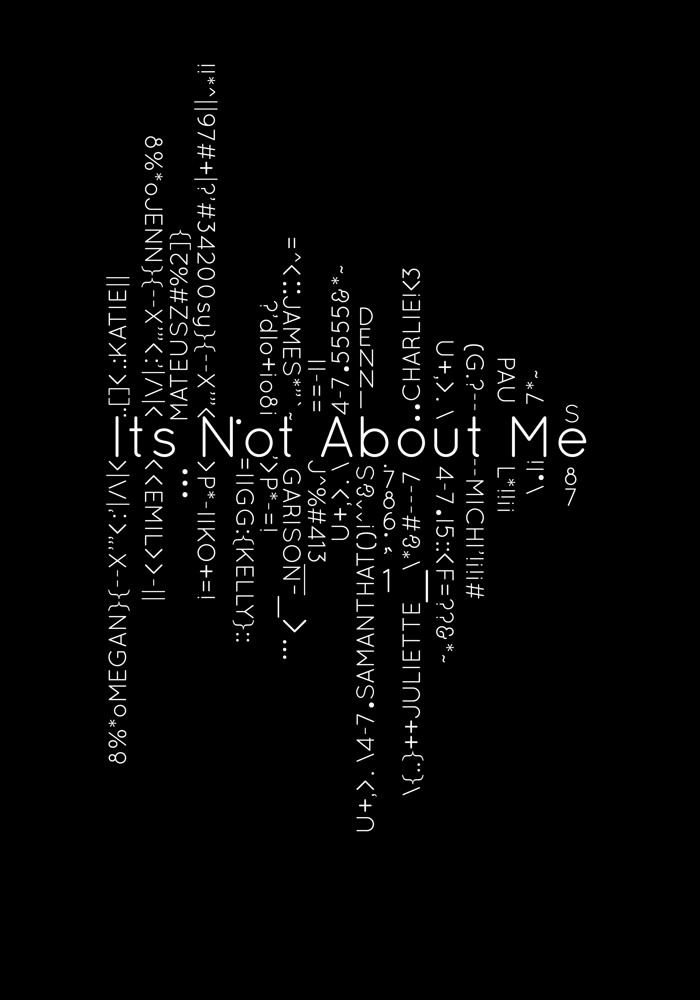
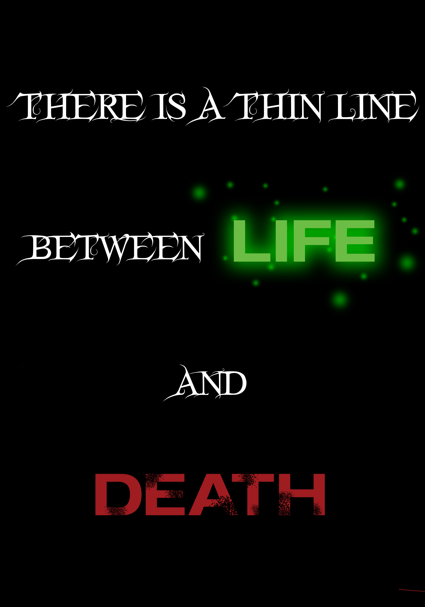
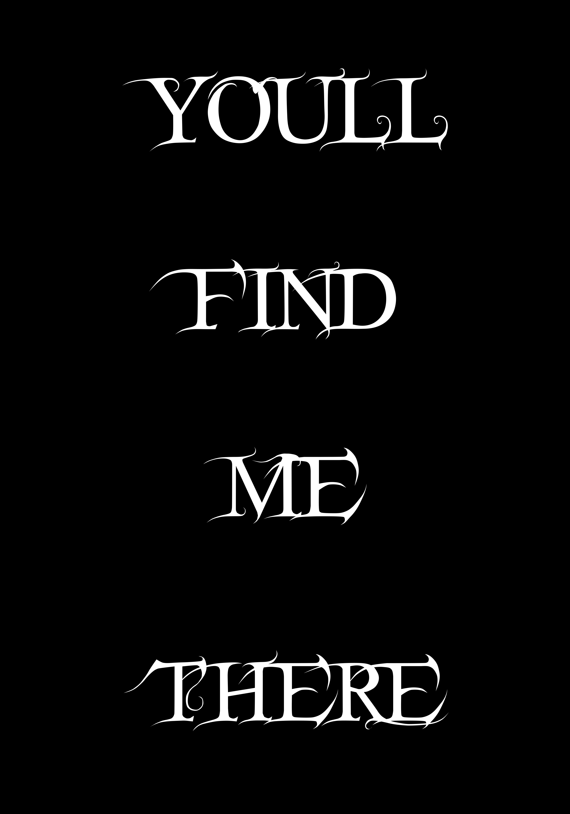
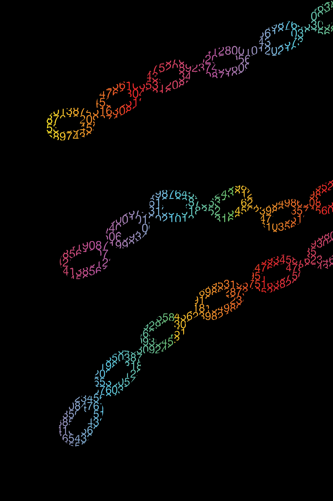
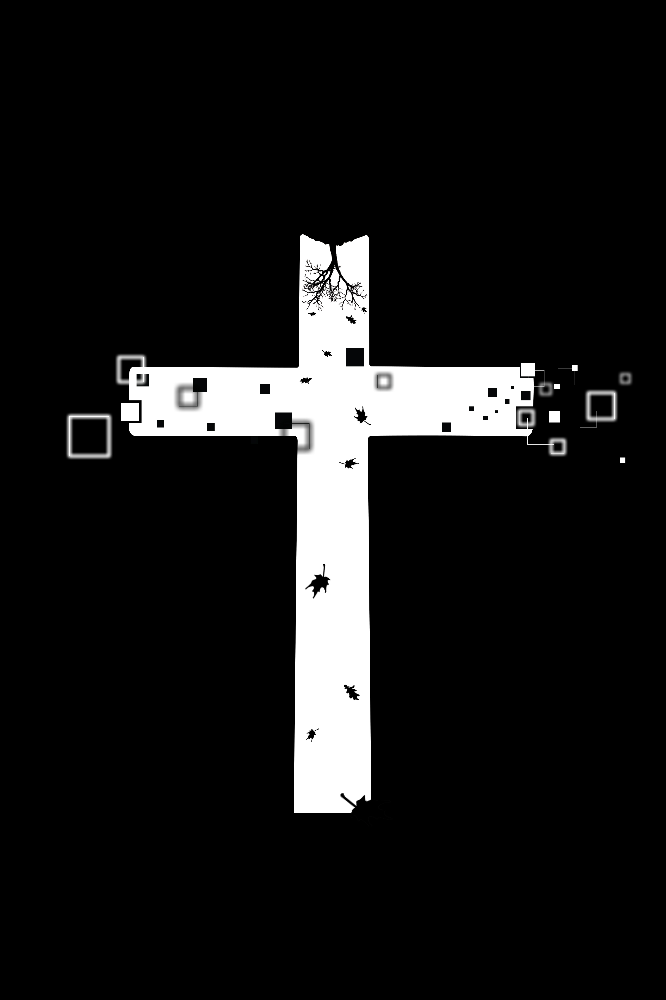

This is basically the main mark/icon of the collection of 7 designs that reflect me. While this is just the title of everything, it is also featured on all pieces of my collection to bring everything together.

This skull is a reminder of death to me. My online personality as well as my physical personality will die someday and at different times.

Lets Get This Bread is a catch phrase of mine but its true meaning is that of a battlecry. It is something I often say to hype myself up before approaching a task.

Its not about me is an allusion to myself. Where if you pay attention and look past me and the title on the shirt, you will see names of people hidden in the coded text who my life is really about.

The front part of this design is a metaphor where life and death can be anything that has a potential negative or positive outcome. Life and death can be those outcomes for sure.

The back of this design is more serious. Whatever the situation with a negative/positive outcome is, I find myself at that thin line where one decision determines where I end up.

The numbers are colorful and made of numbers to represent my love for the future and nerdy products. the black background and chains are more of my love for the dark edgy culture. Cyber and Punk connected.

The vertial axis of this cross is showing attributes of nature like leaves. The horizonal axis shows attributes of the digital world. My message with this is that wether online or in real world, Christ is my savior and Lord.